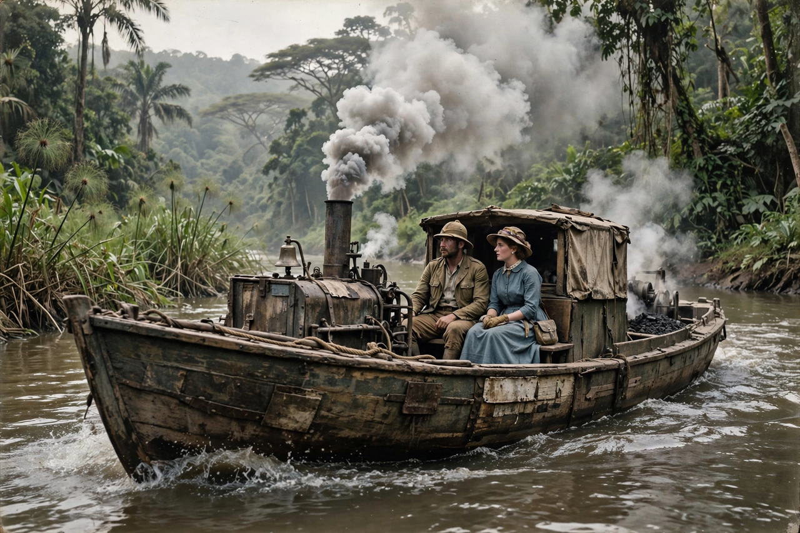

The African Queen is a 1951 adventure film directed by John Huston, adapted from the 1935 novel by C. S. Forester. It stars Humphrey Bogart and Katharine Hepburn as an unlikely pair who flee down a river in German East Africa at the outbreak of the First World War and hatch a plan to torpedo a German gunboat. Bogart won the Academy Award for Best Actor for his performance, his only Oscar.
| The African Queen | |
|---|---|
| Directed by | John Huston |
| Based on | The African Queen (1935) by C. S. Forester |
| Starring | Humphrey Bogart, Katharine Hepburn |
| Release date | 1951 |
| Cinematography | Jack Cardiff (Technicolor) |
In August 1914, Rose Sayer, a prim English missionary, is stranded when German troops burn her village and her brother dies of fever. She escapes aboard the African Queen, a battered steam launch piloted by the rough, gin-drinking Canadian mechanic Charlie Allnut. Despite their temperamental opposition, Rose persuades Charlie to convert the launch into a torpedo boat and attack the German gunboat Königin Luise patrolling the lake at the river's end. Rapids, leeches, disease and their growing affection test the plan; captured and about to be hanged as spies, they are saved when the wreck of the African Queen drifts into the gunboat and detonates.
The film was shot on location in the Belgian Congo and Uganda, an arduous production beset by dysentery and accidents; the story of its making later inspired Clint Eastwood's film White Hunter Black Heart and Hepburn's memoir The Making of The African Queen.
The film was selected for the National Film Registry in 1994. The original steam launch used in the film survives and is displayed in Key Largo, Florida.
See also: Katharine Hepburn · World War I